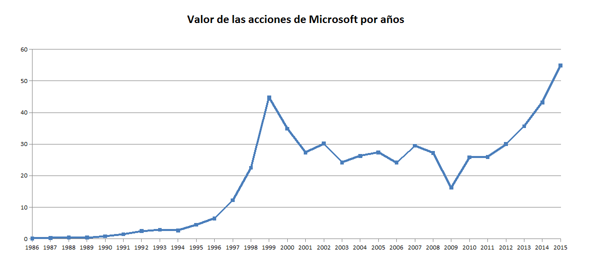

Valor acciones
Valor de las acciones de Microsoft por años

| Año |
1986 |
1988 |
1990 |
1992 |
1994 |
1996 |
1998 |
2000 |
2002 |
2004 |
2006 |
2008 |
2010 |
2012 |
2014 |
2015 |
| Valor acciones |
0,1 |
0,39 |
0,79 |
2,47 |
2,65 |
6,45 |
22,53 |
34,88 |
30,16 |
26,23 |
24,15 |
27,2 |
25,81 |
30,02 |
43,2 |
54,92 |
Ir a...
Inicio
Los inicios de Microsoft
Windows MS-DOS
Windows 1.0
Windows 2.0
Windows 3.0
Windows NT
Windows 95
Windows 98
Windows Me
Windows 2000
Windows XP
Windows Vista
Windows 7
Windows 8
Windows 10
Bibliografía